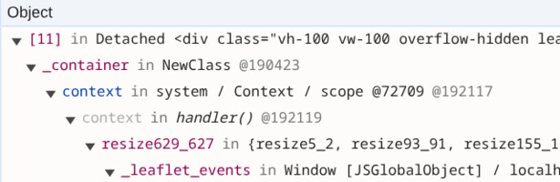

<section data-template="claim-image">
  <div class="block" data-type="text" data-name="title" style="left:64px;top:96px;width:1150px;height:auto;z-index:10;text-align:left">
    <h2>Exercise 4 - What holds the old DOM</h2>
  </div>
  <div class="block" data-type="text" data-name="claims" style="left:64px;top:220px;width:520px;height:auto;z-index:11;text-align:left">
    <ul>
<li><code>window</code> → Leaflet's resize handler → the map → its container</li>
<li>The <span style="color:#ff8c00">old DOM tree</span> stays, not the Home instance</li>
<li>The footer: its interval callback holds it</li>
</ul>
  </div>
  <div class="block" data-type="image" data-name="image-1" data-keep-ratio style="left:640px;top:220px;width:614px;height:200.0px;z-index:12">
    
  </div>
  <aside class="notes">Retainers pane on a Detached &lt;leaflet&gt;, step-4 after 5 rounds (real DevTools). Read bottom-up: Window._leaflet_events -&gt; resize handler -&gt; its closure -&gt; the map (NewClass, _container) -&gt; div.leaflet-container -&gt; the detached tree.
HomeComponent count stays 1: Angular keeps a numeric LView id on DOM nodes, not a pointer to the component, so the old DOM stays alive, not the old Home instance.

Here's what the Retainers pane shows. Read it from the bottom: Window has a _leaflet_events object, Leaflet's own bookkeeping. In it a resize handler. The handler's closure has the map, the map has its container div, and a detached node keeps its whole tree, up through the leaflet element to the old page.
Be precise about what leaks. It's the old DOM tree, all 133 rows of the old list included. The old HomeComponent object is gone: the snapshot has exactly one. Angular stores a number on DOM nodes to find its view, not the component itself, so the DOM doesn't drag the component along.
The footer is different: its setInterval callback is an arrow function that uses this, so the browser's timer list holds the footer component itself. That's the eleven.
Ask the room: who put a listener on window? We didn't. Leaflet did, and it only takes it off in map.remove().</aside>
</section>
